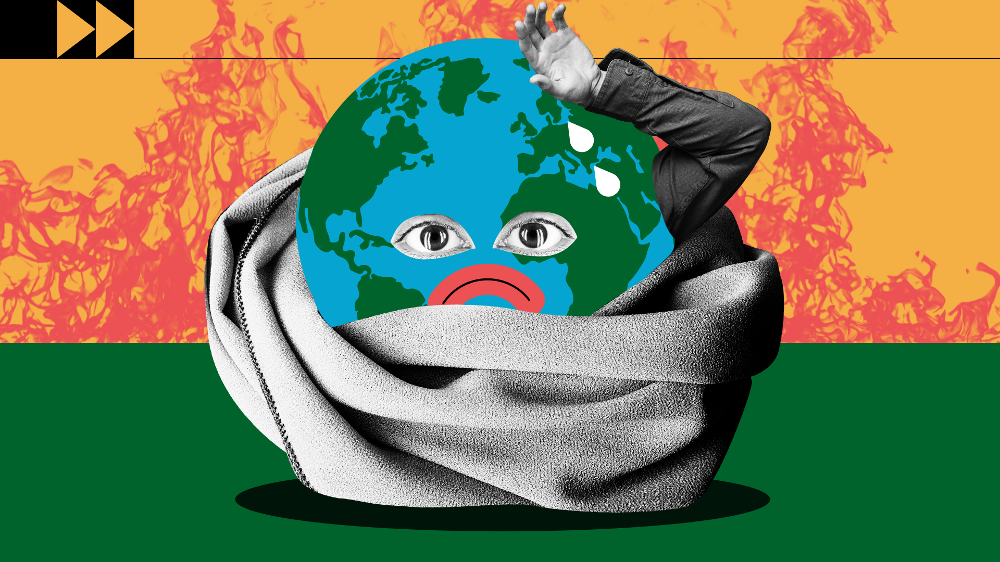

المناخ
ما هو تغير المناخ؟
يقصد بتغير المناخ التحولات طويلة الأجل في درجات الحرارة وأنماط الطقس. قد تكون هذه التحولات طبيعية فتحدث،
على سبيل المثال، من خلال التغيرات في الدورة الشمسية. ولكن، منذ القرن التاسع عشر، أصبحت الأنشطة البشرية
المسبب الرئيسي لتغير المناخ، ويرجع ذلك أساسًا إلى حرق الوقود الأحفوري، مثل الفحم والنفط والغاز.
.ينتج عن حرق الوقود الأحفوري انبعاثات غازات الدفيئة التي تعمل مثل غطاء يلتف حول الكرة الأرضية، مما يؤدي
إلى حبس حرارة الشمس ورفع درجات الحرارة.

تركيزات غازات الدفيئة بلغت أعلى مستوياتها منذ مليوني سنة
والانبعاثات مستمرة في الارتفاع. ونتيجة لذلك، أصبحت الكرة الأرضية الآن أكثر دفئًا بمقدار 1.1 درجة مئوية
عما كانت عليه في أواخر القرن التاسع عشر. وكان العقد الماضي (2011-2020) الأكثر دفئًا على الإطلاق.
يعتقد الكثير من الناس أن تغير المناخ يعنا أساسًا ارتفاع درجات الحرارة، ولكن ارتفاع درجة الحرارة ليس سوى
بداية القصة، ولأن الأرض عبارة عن نظام، حيث كل شيء متصل، فإن التغييرات في منطقة واحدة قد تؤدي إلى تغييرات
في جميع المناطق الأخرى.
تشمل عواقب تغير المناخ، من بين أمور أخرى، الجفاف الشديد وندرة المياه والحرائق الشديدة وارتفاع مستويات
سطح البحر والفيضانات وذوبان الجليد القطبي والعواصف الكارثية وتدهور التنوع البيولوجي.

الناس يعانون من تغير المناخ بطرق شتّى
يمكن أن يؤثر تغير المناخ على صحتنا وقدرتنا على زراعة الأغذية والسكن والسلامة والعمل. البعض منا أكثر
عرضة لتأثيرات المناخ، مثل الأشخاص الذين يعيشون في الدول الجزرية الصغيرة والبلدان النامية الأخرى. لقد
ساءت الظروف مثل ارتفاع مستوى سطح البحر وتسلل المياه المالحة إلى درجة اضطرت فيها مجتمعات بأكملها إلى
الانتقال، كما أن فترات الجفاف الطويلة تعرض الناس لخطر المجاعة. في المستقبل، من المتوقع أن يرتفع عدد
"اللاجئين بسبب المناخ".
كل زيادة في ظاهرة الاحتباس الحراري مهمة
أقر آلاف العلماء والجهات المستعرضة الحكومية —في سلسلة تقارير أممية— أن الحد من ارتفاع درجة الحرارة
العالمية إلى ما لا يزيد عن 1.5 درجة مئوية سيساعدنا على تجنب أسوأ التأثيرات المناخية والحفاظ على مناخ
صالح للعيش. وإلى ذلك، وبناءً على خطط الوطنية الحالية للمناخ، فإن من المتوقع أن يصل الاحترار العالمي إلى
ما يقرب من 3.2 درجة مئوية بحلول نهاية القرن.
تأتي الانبعاثات التي تسبب تغير المناخ من كل منطقة من العالم وتؤثر على الجميع، لكن بعض البلدان تنتج أكثر
بكثير من غيرها، حيث أن المائة دولة التي تنتج أقل قدر من الانبعاثات تولد 3 في المائة فقط من إجمالي
الانبعاثات، بينما البلدان العشرة التي تنتج أكبر قدر من الانبعاثات تولد 68 في المائة من الانبعاثات. يجب
على الجميع اتخاذ إجراءات بشأن المناخ، لكن البلدان والأشخاص الذين يتسببون في أكبر قدر من المشكلة يتحملون
مسؤولية أكبر لمباشرة العمل بشأن المناخ.
نواجه تحديات كبيرة، ولكننا لدينا العديد من الحلول
يمكن أن تحقق عديد الحلول لتغير المناخ مناقع اقتصادية مع تحسين معايشنا وحماية البيئة. فضلا عن ذلك،
أُبرمت كذلك أطر عمل واتفاقيات عالمية لتوجيه عملية التقدم المُحرز من مثل: أهداف التنمية المستدامة وكذلك
اتفاقية الأمم المتحدة الإطارية بشأن تغير المناخ فضلا عن اتفاق باريس . وهناك فئات ثلاث عامة من الإجراءات
اللازم اتخاذها، وهي: خفض الانبعاثات، والتكيف مع تأثيرات المناخ، وتمويل التعديلات اللازمة.
سيؤدي تحويل أنظمة الطاقة من الوقود الأحفوري إلى مصادر الطاقة المتجددة، مثل الطاقة الشمسية أو طاقة
الرياح، إلى تقليل الانبعاثات المسببة لتغير المناخ. لكن علينا أن نبدأ الآن. يلتزم تحالف متنام من البلدان
بالوصول بالانبعاثات إلى مستوى الصفر بحلول عام 2050، ومع ذلك يجب أن يتم خفض الانبعاثات بحوالي النصف بحلول
عام 2030 للحفاظ على الاحترار بأقل من 1.5 درجة مئوية، ويجب أن ينخفض إنتاج الوقود الأحفوري بنسبة 6 في
المائة تقريبًا سنويًا خلال العقد 2020-2030.

ومن جهة أخرى، فإن التكيف مع العواقب المناخية يحمي الناس والمنازل والشركات وسبل العيش والبنية التحتية
والنظم البيئية الطبيعية، بحيث يشمل التأثيرات الحالية والتي يحتمل أن تحدث في المستقبل. يجب أن يتم التكيف
في كل مكان، ويجب إعطاء الأولوية الآن للأشخاص الأكثر ضعفًا الذين لديهم أقل الموارد لمواجهة مخاطر المناخ،
إذ أن معدل العائد قد يكون مرتفعًا. على سبيل المثال، أنظمة الإنذار المبكر للكوارث تنقذ الأرواح
والممتلكات، وقد تمكن من تحقيق فوائد تصل إلى 10 أضعاف التكلفة الأولية.
يمكننا دفع الفاتورة الآن ... أو دفع ثمن باهظ في المستقبل
يتطلب العمل المناخي استثمارات مالية كبيرة من قبل الحكومات والشركات، لكن التقاعس عن العمل المناخي يكلف
ثمنا باهضاً. تتمثل إحدى الخطوات الحاسمة في وفاء البلدان الصناعية بالتزامها بتقديم 100 مليار دولار سنويًا
إلى البلدان النامية حتى تتمكن من التكيف والتحرك نحو اقتصادات أكثر اخضرارًا.

10 طرق يمكنكم من خلالها المساعدة في مكافحة أزمة تغير المناخ
أولا، انشروا الوعي
شجعوا أصدقاءكم وعائلاتكم وزملاءكم في العمل على تقليل التلوث الكربوني. انضموا إلى حركة عالمية مثل "كاونت
أس إن" Count Us In، والتي تهدف إلى إلهام مليار شخص لاتخاذ خطوات عملية وتحدي قادتهم للعمل بجرأة أكبر بشأن
المناخ.
يقول مؤسسو المنصة إنه إذا اتخذ مليار شخص إجراءات عملية، فيمكنهم تقليل ما يصل إلى 20 في المائة من
انبعاثات الكربون العالمية. أو يمكنكم الاشتراك في حملة الأمم المتحدة "اعملوا الآن" بشأن تغير المناخ
والاستدامة وإضافة صوتكم إلى هذا النقاش العالمي المهم.
ثانيا، استمروا في الضغط السياسي
الضغط على السياسيين والشركات المحلية لدعم الجهود المبذولة لخفض الانبعاثات وتقليل التلوث الكربوني.
لدى مبادرة "كاونت أس إن" بعض النصائح المفيدة حول كيفية القيام بذلك. قوموا باختيار قضية بيئية تهتمون بها،
وطالبوا بالتغيير الذي تودون رؤيته، ثم حاولوا ترتيب لقاء مع ممثليكم في المكان الذي تعيشون فيه.
قد يبدو الأمر مخيفا لكن صوتكم يستحق أن يُسمع. إذا أريد للإنسانية أن تنجح في معالجة حالة الطوارئ
المناخية، يجب أن يكون القادة السياسيون جزءا من الحل. الأمر متروك لنا جميعا لمواكبة الضغط.
ثالثا، قوموا بتحويل وسائل نقلكم
يعتبر قطاع النقل مسؤولا عن حوالي ربع جميع انبعاثات غازات الاحتباس الحراري. تقوم العديد من الحكومات، في
جميع أنحاء العالم، بتنفيذ سياسات لإزالة الكربون من وسائل النقل.
أنتم أيضا يمكنكم المساهمة في ذلك: اتركوا سياراتكم في المنزل وامشوا أو اركبوا الدراجات الهوائية كلما أمكن
ذلك.
إذا كانت المسافات بعيدة، فعليكم استخدام وسائل النقل العام، ويفضل أن تكون الوسائل العاملة بالكهرباء. إذا
كان لا بد من القيادة، فاقترحوا مشاركة السيارات مع آخرين بحيث يتم تقليل عدد المركبات على الطريق العام.
وإذا كان بالإمكان، فقوموا بشراء سيارات كهربائية. قللوا من عدد الرحلات الطويلة التي تقومون بها.
رابعا، السيطرة على استخدام الطاقة
إذا استطعتم، قوموا باستبدال مزود الطاقة إلى مزود خال من الكربون أو يعمل بالطاقة المتجددة.
قوموا بتركيب الألواح الشمسية على أسطح منازلكم. كونوا أكثر فاعلية: اخفضوا التدفئة بدرجة أو درجتين، إن
أمكن.
أوقفوا تشغيل الأجهزة والأضواء، في حال عدم استخدامها، ومن الأفضل شراء المنتجات الأكثر كفاءة في المقام
الأول. استخدموا عازلا للسقف بحيث يكون المنزل أكثر دفئا في الشتاء، وأكثر برودة في الصيف، وسيسهم ذلك في
توفير بعض المال أيضا
خامسا، عدلوا نظامكم الغذائي
تناولوا المزيد من الوجبات النباتية - ستشكركم أجسامكم وسيشكركم كذلك كوكب الأرض. اليوم، يتم استخدام حوالي
60 في المائة من الأراضي الزراعية في العالم لرعي الماشية ويستهلك الناس في العديد من البلدان أغذية من
مصادر حيوانية أكثر مما هو صحي.
يمكن أن تساعد النظم الغذائية الغنية بالمنتجات النباتية في تقليل الأمراض المزمنة، مثل أمراض القلب والسكتة
الدماغية والسكري والسرطان.
سادسا، تسوقوا محليا واشتروا منتجات مستدامة
لتقليل البصمة الكربونية في طعامكم، قوموا بشراء الأطعمة المحلية والموسمية. سيساعد ذلك الشركات الصغيرة
والمزارع في منطقتكم وسيسهم في تقليل انبعاثات الوقود الأحفوري المرتبطة بالنقل وتخزين سلسلة التبريد.
تستخدم الزراعة المستدامة طاقة أقل بنسبة تصل إلى 56 في المائة، وتنتج انبعاثات أقل بنسبة 64 في المائة
وتسمح بمستويات أكبر من التنوع البيولوجي مقارنة بالزراعة التقليدية. يمكنكم فعل أكثر من ذلك من خلال زراعة
الفاكهة والخضروات والأعشاب بأنفسكم. يمكنكم زرعها في حدائقكم أو في شرفة منازلكم. قوموا بإعداد حديقة
مجتمعية في منطقتكم بغرض إشراك الآخرين.
سابعا، لا تهدروا الطعام
يتم فقدان أو هدر ثلث الطعام المنتج. وفقا لتقرير مؤشر نفايات الأغذية لبرنامج الأمم المتحدة للبيئة لعام
2021، يهدر الناس، على مستوى العالم، مليار طن من الطعام سنويا، وهو ما يمثل حوالي 8-10 في المائة من
انبعاثات غازات الاحتباس الحراري العالمية.
تجنبوا الهدر بشراء ما تحتاجونه فقط. استفيدوا من كل جزء صالح للأكل من الأطعمة التي تشترونها. قوموا بقياس
أحجام حصص الأرز والسلع الأساسية الأخرى قبل طهيها، وخزنوا الطعام بشكل صحيح (استخدموا ثلاجة المجمد أو
الفريزر إذا كانت لديكم واحدة)، وكونوا مبدعين في التعامل مع بقايا الطعام، وشاركوا ما يزيد عن حاجتكم مع
الأصدقاء والجيران، تبنوا مشروعا محليا لمشاركة الطعام.
استخدموا المخلفات غير الصالحة للأكل في صناعة السماد لتخصيب حدائقكم. يعتبر التسميد أحد أفضل الخيارات
لإدارة النفايات العضوية مع تقليل الآثار البيئية أيضا.
ثامنا، ارتدوا ملابس "ذكية بيئيا"
تمثل صناعة الأزياء ما بين 8 إلى 10 في المائة من انبعاثات الكربون العالمية - أكثر من جميع الرحلات الجوية
الدولية والشحن البحري مجتمعين - وقد خلقت "الموضة السريعة" ثقافة التخلص من الملابس التي ينتهي بها الحال،
سريعا، إلى مكبات النفايات.
لكن يمكننا تغيير هذا النمط من السلوك من خلال شراء عدد أقل من الملابس الجديدة وارتدائها لفترة أطول.
ابحثوا عن المنتجات المستدامة واستعينوا بخدمات التأجير للمناسبات الخاصة بدلا من شراء ملابس جديدة سيتم
ارتداؤها لمرة واحدة فقط. قوموا بإعادة تدوير الملابس التي تحبونها وإصلاحها عند الضرورة.
تاسعا، ازرعوا الأشجار
في كل عام يتم تدمير ما يقرب من 12 مليون هكتار من الغابات. وتعد إزالة الغابات، إلى جانب الزراعة والتغيرات
الأخرى في استخدام الأراضي، مسؤولة عما يقرب من 25 في المائة من انبعاثات غازات الاحتباس الحراري العالمية.
يمكننا جميعا أن نلعب دورا في عكس هذا الاتجاه من خلال زراعة الأشجار، إما بشكل فردي أو كجزء من مجموعة.
على سبيل المثال، تسمح مبادرة "ازرعوا من أجل كوكب الأرض" للناس برعاية غرس الأشجار في جميع أنحاء العالم.
راجعوا دليل برنامج الأمم المتحدة للبيئة هذا لمعرفة ما يمكنكم القيام به أيضا كجزء من عقد الأمم المتحدة
لاستعادة النظام البيئي، وهو حملة عالمية لوقف تدهور الأراضي والمحيطات، وحماية التنوع البيولوجي، وإعادة
بناء النظم البيئية.
عاشرا، ركزوا على استثمارات صديقة للكوكب
يمكن للأفراد أيضا تحفيز التغيير من خلال مدخراتهم واستثماراتهم عن طريق اختيار المؤسسات المالية التي لا
تستثمر في الصناعات الملوثة للكربون.
ويرسل ذلك إشارة واضحة إلى السوق. وهناك العديد من المؤسسات المالية تقدم بالفعل المزيد من الاستثمارات
الأخلاقية، مما يسمح لكم باستخدام أموالكم لدعم القضايا التي تؤمنون بها وتجنب تلك التي لا تؤمنون بها.
يمكنكم الاستفسار من مؤسساتكم المالية عن سياساتها المصرفية.
هذا المقال نُشر بالإنجليزية على موقع برنامج الأمم المتحدة للبيئة.